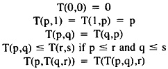
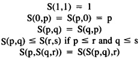
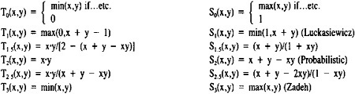

by Abraham Kandel
CRC Press, CRC Press LLC
ISBN: 084934297x Pub Date: 11/01/91
|
|
Fuzzy Expert Systems
by Abraham Kandel CRC Press, CRC Press LLC ISBN: 084934297x Pub Date: 11/01/91 |
| Previous | Table of Contents | Next |
The lookahead process in the backward reasoning starts assuming that all the nonevaluated conditions of the rules leading to the same conclusion, have the highest linguistic certainty value among the ordered set of linguistic values defined by the expert. This allows to compute the highest possible certainty value that this conclusion could reach. If this value is higher than the acceptance threshold, the backward reasoning proceeds asking the user to assign a linguistic certainty value to the nonevaluated, nondeducibile conditions one by one. Each time a condition gets its value, it is propagated to the conclusion using the preceding formula, and if its certainty value is still higher than the threshold, the process proceeds asking for the value of the next nondeducible condition and so on until either the certainty value of the conclusion falls below the threshold (in which case MILORD calls back the forward reasoning mode to deduce another hypothesis), or all the nondeducible conditions have been assigned a certainty value. As far as the deducible conditions are concerned, the lookahead process is applied recursively to each one of them, as described, and its certainty value is also propagated toward the conclusion in order to keep checking if its certainty value is higher than the threshold, in which case the process resumes. If not, the forward reasoning mode will try to deduce a new hypothesis.
If the user initially gives a set of hypotheses, instead of a set of facts, MILORD calls the backward reasoning mode with one of the hypotheses and tries to validate it with a linguistic certainty value higher than the threshold, using exactly the same process described previously. If it fails, it tries another hypothesis, and so on until either one of them succeeds or all of them fail.
The set of criteria to select rules has to be easily modifiable because the efficiency of any criterion depends on each particular application. In MILORD it is very easy for the user to modify or introduce criteria. The selection among a given set of criteria can, in some cases, be done automatically. For example, if a knowledge base only contains rules which have a single conclusion, any criterion based on the number of conclusions would not be considered. The criteria that, in addition to metarules, are available in MILORD are
Furthermore, the user can combine several criteria according to a given priority. For example:
The extreme values corresponding to the following ordered criteria are
In this case the system will try to select a rule, among the applicable ones, having a certainty value equal to “absolutely-true”, and having one condition and one conclusion. If there is no rule satisfying these criteria, it will drop the last one (number of conditions) and so on until one or more rules are obtained. If several rules have been obtained, the user can use the rest of the criteria to end up with only one rule. In our example, after dropping the last criterion, the selected rule is R1.
The numerical approaches to the representation of uncertainty imply hypotheses of independence, mutual exclusiveness, etc. about the information they deal with. On the other hand, they oblige the expert and the user to be unrealistically precise and consistent in the assignment of such numerical values to rules and facts. Furthermore, these approaches are computationally expensive.
Our approach is based on a linguistic characterization of the uncertainty and follows the work of Bonissone.3 The linguistic certainty values are terms defined by the expert. The internal representation of each term is a fuzzy number on the interval [0,1] characterized by a parametric representation for computational reasons.
MILORD has been parametrized in order to perform three different calculi of uncertainty operating on the expert defined term set of linguistic certainty values.
It can be shown5 that triangular norms (t-norms) and triangular conorms (t-conorms) are the most general families of two-place functions from [0,1] × [0,1] to [0,1], that satisfy the requirements of conjunction and disjunction operators, respectively.
A t-norm. T(p,q) performs a conjunction operator, on the degrees of certainty of two or more conditions in the same premise, satisfying the following properties:

A t-conorm S(p,q) computes the degree of certainty of a conclusion derived from two or more rules. It is a disjunction operator satisfying the following properties:

The propagation function P(p,r), giving the certainty value of the conclusion of a rule as a function of the certainty value of the premise and the certainty value of the rule itself, satisfies the properties of a t-norm.
For suitable negation operators N(x)13, t-norms and t-conorms are dual in the sense of DeMorgan’s law.
Some usual pairs of dual t-norms and t-conorms are

It can be shown that they are ordered as follows:
T0 ≤ T1.5 ≤ T2 ≤ T2.5 ≤ T3
S3 ≤ S2.5 ≤ S2 ≤ S1.5 ≤ S1 ≤ S0
| Previous | Table of Contents | Next |